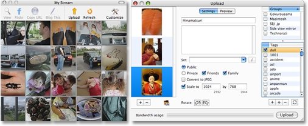

What is 1001?
1001 is a desktop client to be used in conjunction with Flickr,
the online photo-sharing website.
1001 not only uploads photos to your Flickr account, it notifies you anytime new photos from either your contacts, everyone, or your favorite tags are uploaded.

1001 allows you to step into the stream of photos passing through Flickr and to quickly see what's new at the moment. Just run the app in the background and if triggered, 1001 pops up a small unobtrusive window to notify you of new photos.
1001 comes with a Flickr screensaver that will incrementally display the latest image from Flickr. You do not need to have 1001 installed to use this screensaver.